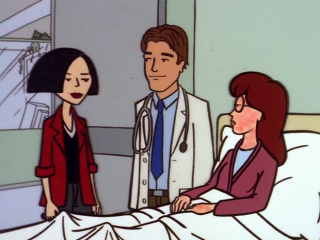

Episode Guide
Episode Guide
|  |
Ill Episode #209 - July 6, 1998 Written by Peter Gaffney Song List Entries For This Episode Oops! List Entries For This Episode Transcript For This Episode |
|
Previous "Gifted" (#208) |
Next "Fair Enough" (#210) |
|
Cast |
|---|
|
Regular:
Daria,
Quinn,
Helen,
Jake,
Jane,
Trent,
Brittany,
Kevin,
Jodie,
Mack,
Jesse,
Mr. O'Neill
Guest: Dr. Davidson, Dr. Phillips, Eleanor Sullivan, Slackers in Heaven, Nurse Chase (voice) Non-Speaking: Andrea, Nicholas Campbell, Max Tyler |
|
Plot |
|
Summary:
When Daria is hospitalized with a mysterious ailment that covers her face with a bright, red rash, she finds out just how many friends she really does have at Lawndale High. |
|
Interesting Tidbits |
Continuity:
|
|
Memorable Quotes |
|
Jane - The band's going over to Cluster Burger. You're not going to act like a complete nitwit, are you? Daria - Define complete. Um, I just need to go to the bathroom. Jane - Good idea. Check your lack of makeup. Jake - Oh, my gosh, Helen, you don't think Daria... Helen - Jake, she was never happy, vibrant or involved. Besides, she's a straight-A student. Jake - That could be her cover! Her pupils -- we should check her pupils. What did I do with that pamphlet? Helen - Jake, please. Jake - For all we know, she's dealing Mary Jo out of the rec room. Helen - That's Mary Jane, and we don't have a rec room. Daria - "Is Your Teenager Using Drugs? Ten Warning Signs." Yes. Yes. No. Maybe. Sometimes. Hmm. About three times a week. And not if she can possibly avoid it. In my opinion, Quinn's clean. Quinn - What? Daria - Although you might want to check her pupils. Jake - (laughs nervously) I, uh, was thinking more about you, Daria. Daria - Oh, then you're not supposed to let me read this. You're supposed to sneak around, spying on me and looking through my sock drawer. (doorbell rings, Daria leaves) Jake - Oh. Kiddo, which one is your sock drawer? Quinn - I can show you, Daddy. Daria - Look, I'm sorry about last night Jane - Aw, forget it. It was a rare opportunity, getting to hang out with Brittany in a grunge club. Although her hair did leak onto my shoes. Daria - You're sure that wasn't her brain? Jane - No, there was too much of it. Jane - Anyway, the important thing is that instead of going to your friends for help, you ran screaming into the night. Daria - Basically. Jane - Perfectly logical response. Daria - I thought so. Daria - I don't get it. You're really helping me? Quinn - Skin-care crises transcend personality conflicts, Daria. It's in the Fashion Club bylaws. Daria - Hey, what are you doing with all that stuff? Your skin's fine. Quinn - And it's going to stay that way. Brittany - Have you seen... (whispers) ...Daria? Jane - Why would you want... Daria? Brittany - What makes you think I want her? I don't want her! Who said I want her? Jane - You asked me if I'd seen her. Brittany - She hasn't told you anything... interesting... about me, has she? Jane - No one's ever told me anything interesting about you. Brittany - That's a relief! Brittany - Just ask her if she remembers our deal. Jane - What deal? Brittany - What deal? Jane - The deal you just mentioned. Brittany - I didn't say anything about a deal. Forget I said anything about a deal. Jane - Forget I said anything about a hospital. Brittany - Okay! Jane - Hey! Now we have a deal. Brittany - What deal? Jane - Later. (leaves) Daria - So then, what did you want to ask me? Dr. Phillips - Nothing in particular. I just thought you could use a break from your parents for a while. You play gin rummy? Daria - Sure. (Dr. Phillips begins dealing cards) Dr. Phillips - Actually, I did want to ask you one thing. Daria - Yeah? Dr. Phillips - What is it with your mother? (Daria is dreaming about being in Heaven) Guy #1 - Oh, man, what'd you do? Bring us another brain? Mrs. Sullivan - Look, I just go where they tell me. Daria - Um, is there a problem? Guy #2 - This is Heaven, sweetheart. What would we want with a brain? Daria - I don't... Mrs. Sullivan - Sorry. (Daria falls through clouds, screaming) Jodie - Brittany, I'm sure if it was serious, Daria would be in the hospital. Brittany - Um... Jodie - What? She is in the hospital? Brittany - Eep! Jodie - She's not in the hospital. Brittany - (squeals, then non-stop) I promised I wouldn't say anything about the hospital because I made a deal with Daria and she kept her part and I kept my part but then I made another deal with Jane and I didn't even know I was making it and now I didn't keep my part because I told about the hospital so now Jane's going to tell about the deal and I didn't mean anything by it I just wanted to see what other kids do at night who don't do sports and he didn't mean anything to me, Kevvy, I swear it! Kevin - So... she is in the hospital. Daria - Jane, this is Dr. Phillips. Dr. Phillips - Pleased to meet you. Friend, not family, right? Jane - How can you tell? Dr. Phillips - Daria seemed happy to see you. Jane - Ooh-la-la! Doctor, I have a pain... Daria - Please. The man is a butcher. Look what he's done to my face. Daria - Like I need this. Jane - What? Daria - A big, bright, mysterious rash covering my skin. Jane - I know! And here you were, perfectly capable of alienating people on personality alone. Daria - You know, you could have just sent flowers. Daria - I'm probably okay... Mack - So that's cool. Daria - ...for a human lobster. Jodie - Oh, so you're a little red. It could happen to anybody. (looks at Mack) Well, it could happen to lots of people. |
|
Mike Quinn's Delayed Reaction Review |
|
Trent Watch:
This is the first time we get to see all of Mystik Spiral (I figured that one of them would be bald). It also wasn't that surprising that Trent was one of the causes of Daria's mystery illness (he does produce anxiety for Daria, after all [anyone that doesn't know this hasn't been watching]). Even though part of the cause was predictable, it didn't take away from the story. |